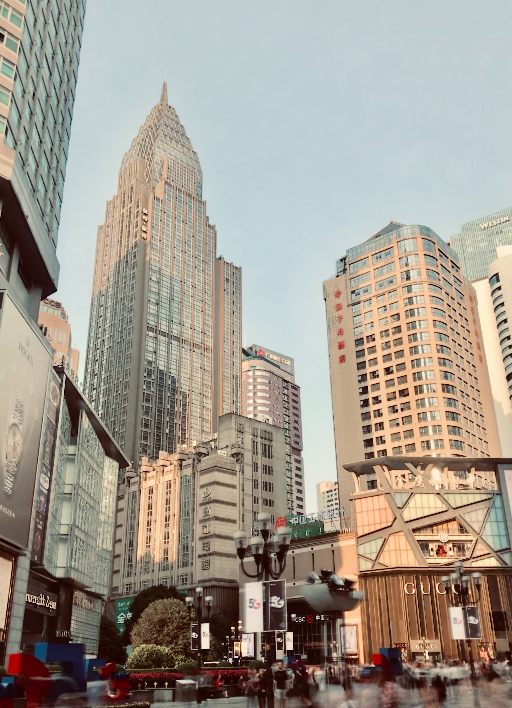
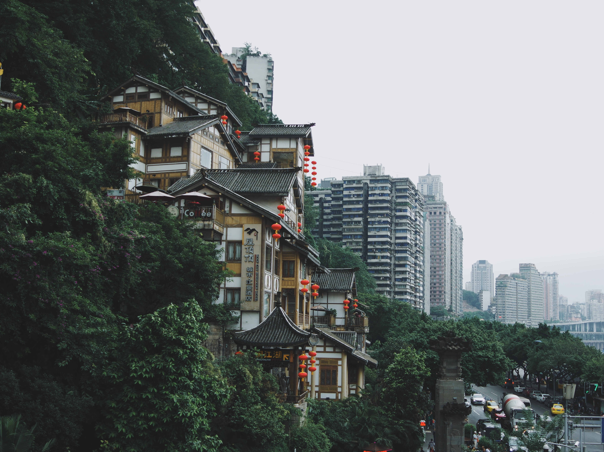

Jiefangbei, a landmark building in chongqing, is located at the intersection of minquan road, minzu road and zourong road in yuzhong district, the main city of chongqing. The only national monument commemorating the victory of the Chinese nation's war of resistance against Japanese aggression is called the liberation monument, which stands for peace and liberation. It is the historical witness of the victory of Anti-Japanese War and the liberation of chongqing. Seen from the back of the blue sky, the monument of liberation, most of the body is white, there are a few big bells at the top, in all directions, every hour, will be sounded that high and sonorous sound. Yuzhong district, chongqing, the commercial center here, nearby 300 meters have the city's largest snack street. Jiefangbei commercial street is the largest pedestrian street in western China, so it is called "the first street in western China".


Chongqing ligger mellan Zhongliang Mountain och Tongluo Mountain, längs dalarna, terrasserna och kuperade områden där Jialing River och Yangtze River flyter. Staden är byggd på berget, vägarna är ojämna och byggnaderna är utspridda, så det kallas också bergstaden, som är den största och mest kända bergsstaden i Kina. Ta till exempel Chongqings moderstad Yuzhong-halvön. Det är en typisk låg kulle och plattformsform. Hela halvön är en utskjutande ås. Chaotianmen Spit är 168 meter över havet, Jiefangbei-området har en genomsnittlig höjd på 249 meter och Loquat Mountain ligger 340 meter över havet. Höjden är cirka 400 meter och dessa droppar ligger på Yuzhong-halvön på 9 kvadratkilometer. Du kan föreställa dig hur stadens höghus är upp- och nedgångar, hur vägarna snurrar och hur unik bergsstaden är.
Från och med mars 2020 har Chongqing Zoo 18 jättepandor (inklusive 3 utställda i Toronto, Kanada), som rankas först bland djurparker i Kina vad gäller antal. Den 23 juni 2019 födde de jättepandorna "Lanxiang" och "Mangzai" uppvuxna i Chongqing Zoo tvillingungar. Tvillingarna födda av "Lanxiang" är alla pojkar och tvillingarna födda av "Mangzai" är tjejer.